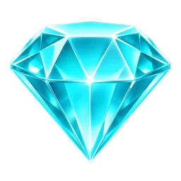
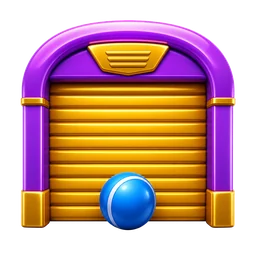
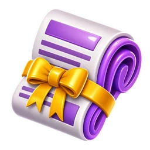
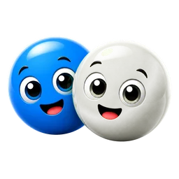
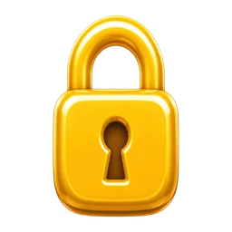
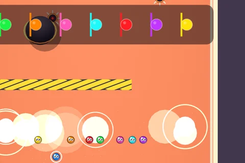
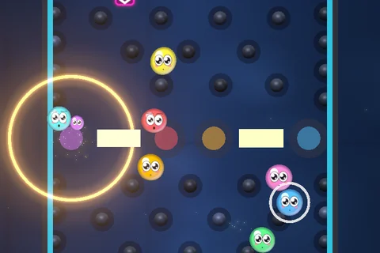
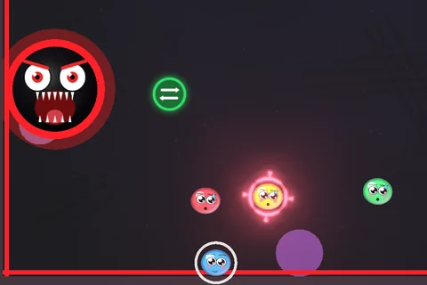
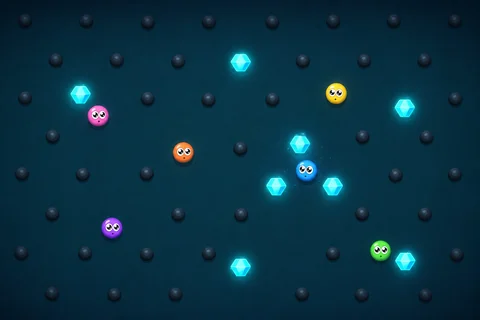
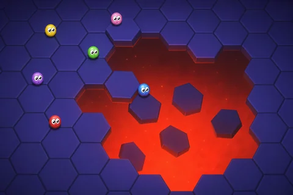

1
NIVEL
0+

0+0Total
Tienda

Garaje
NoticiasRanking

Amigos
Club
🚀 Cohete
🏆 0
Tu bola equipada · toca para ver la colección
PASE DE TEMPORADA
Modo
🏁LA GRAN CARRERA
⭐ DÍA · +50%
MODOS
🚦
LUZ ROJA
Corre y frena

🏁
LA GRAN CARRERA
Llega el primero

🎯
EL CAZADOR
Huye del monstruo

RECOLECTA
Recoge más gemas

Nivel 5
SUELO MENGUANTE
Sobrevive al suelo

Nivel 8
🏆 Ranking
🎁 Franjas de premio · Top 10% → 🎟️ Fichas de Torneo · Top 1% → título + skin
SUPER
👑
Campeón
—
Tu puesto
1º
🏆
Cohete
Copas
0
✦
Chispas
+0
⭐
Nivel 1
Clasificación
Garaje
0
0
Nivel de bola
Tienda
0
0
Temporada
0
0
Temporada 1
Verano en la Cima
Liga
🥇
Oro III
🥉Bronce
🥈Plata
🥇Oro
💎Diamante
👑Élite
Pase de Batalla pronto
Peldaño 12 / 50
Vía gratisVía premium
Rankings
1
🔵 Estela
3 420
2
🔴 Trompo
3 180
3
⭐ Tú
2 960
4
🟢 Bumper
2 610
Perfil
0
0
Jugador
Nivel 1 · alias
Perfil privado
1
Bolas
0
Trofeos
-
Mejor puesto
Amigos pronto
Tu código:BT-7Q4K2
+
+
+
Invita y gana
🎁
Emotes lista cerrada
Tu cuenta
Estás jugando como invitado
Llevar mi partida a otro móvil
BT-••••-••••
Salir en el canal
Compra con dinero real
Resuelve:
Ajustes